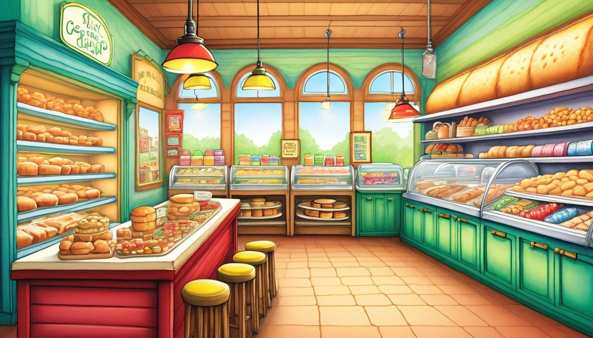

Ages 7-9
Adult guide for printable travel writing
No-screen routines for car passengers, rest stops, hotels, waiting rooms, and family visits.
Best for: Parents, grandparents, homeschool families, tutors, and co-op leaders planning adult-guided travel writing for ages 7-11.
Format: 8 printable travel quests plus adult setup tools
No scary harm, no bullying, no romance, no weapons, no branded characters, no real child profiles.
Adult setup



Travel tools
Children draw the trip route as a simple line, then place three invented story stops along it with one detail at each stop.
At a parked stop, children list five nouns seen nearby and swap two plain nouns for more exact ones.
Before snacks are opened, children name three colors and two textures they can use in a travel scene.
In a waiting room, children choose one low-noise action for a character and write three calm sentences about what changes next.
Children pick three ordinary room objects and sort them into setting detail, helpful item, or ending clue.
Children write a pretend postcard from an invented travel stop using no real address, then add one story problem and one kind ending.
With permission, children ask a relative for three ordinary object words and use one in a fictional scene.
Children imagine a small change in the plan, then write two possible endings: one practical ending and one funny ending.
Pick one window clue, add it to the errand list, and write what the acorn clerk checks first.
Give the child a clipboard or firm book, then invite quiet pointing to one outside detail before writing.
The road sign shape looks like ____________________________.
The cloud clue for Acorn Avenue is ____________________________.
The color I notice most is ____________________________.
The acorn clerk needs ____________________________.
The tiny office drawer holds ____________________________.
The most important note says ____________________________.
First, the clerk checks ____________________________.
Next, the helper carries ____________________________.
The errand ends at ____________________________.
Save this page as the first errand slip for a small Acorn Avenue travel story.
Draw a simple bakery path, then write three clear clues that help the button cart arrive.
Use the table time for one short map chat, then let the child finish the fill-ins at their own pace.
The button cart starts beside ____________________________.
The crumb trail turns near ____________________________.
The bakery counter waits by ____________________________.
The mixed-up map points toward ____________________________.
The clearest clue on the table is ____________________________.
The cart helper asks about ____________________________.
First, roll past ____________________________.
Next, look for ____________________________.
Last, set the button tray on ____________________________.
Save this route page as the map piece for a Button Bakery travel story.
Choose a lunchbox cargo, label the harbor stops, and write the ferry's final note.
Set out only one pencil and two colors so the hotel desk stays simple and easy to reset.
The spoon ferry carries ____________________________.
The lunchbox label says ____________________________.
The snack clue smells like ____________________________.
Stop one is the ____________________________ dock.
Stop two has a ____________________________ sign.
Stop three waits beside ____________________________.
The ferry helper notices ____________________________.
The smoothest route goes around ____________________________.
The final harbor note says ____________________________.
Save this harbor log as the middle scene of a Spoon Ferry travel story.
Mark three puddle stops, pick a helpful boot ranger, and write the route card ending.
Let cousins or siblings each name one pretend puddle, then keep the writing page with one child at a time.
Puddle stop one is shaped like ____________________________.
Puddle stop two is beside ____________________________.
Puddle stop three reflects ____________________________.
My boot ranger carries ____________________________.
The ranger checks the route card for ____________________________.
The kind reminder on the card says ____________________________.
First, step around ____________________________.
Next, follow the dry edge near ____________________________.
The visit-day route ends with ____________________________.
Save this route card as a finished Rain Boot Rangers travel page.
Use the route map and weather clues to plan a tiny railway report with a clear first-next-final order.
Clip the page to a firm folder and invite the child to collect quiet window observations between writing lines.
On the route map, the rain-gauge station is near ____________________.
A window detail that could become a cloud note is ____________________.
The tiny railway should carry the sample toward ____________________.
First, the gauge number shows ____________________.
Next, the railway switches toward ____________________.
Finally, the garden report explains ____________________.
One vague travel word I can replace is ____________________.
The clearer detail I will add is ____________________.
A kind line I can share later is ____________________.
Save this route report as a travel-page starter for a weather railway story.
Compare three tidepool lab notes, choose the most useful observation, and write what the timekeepers should check next.
Use one short table session and let the child point to the strongest clue before drafting the ending.
The first tidepool note measures ____________________.
The shell-shadow detail I notice is ____________________.
The pebble notebook adds ____________________.
The notes match because ____________________.
The notes differ when ____________________.
The timekeepers should check ____________________ before deciding.
My first ending idea is ____________________.
A stronger ending detail is ____________________.
One kind question for a family reader is ____________________.
Save this lab log as a careful-observation page from the road trip.
Turn a folded route map into three seed catalog clues and arrange them into a beginning, middle, and ending.
Set out the page with two quiet color choices and ask the child to circle the clue that should begin the story.
The seed drawer label says ____________________.
The folded route map shows ____________________.
A garden observation written on the edge is ____________________.
Beginning clue: ____________________.
Middle clue that changes the map: ____________________.
Ending clue for the next gardener: ____________________.
One map detail I can make more exact is ____________________.
The sentence I want to revise is ____________________.
A kind sharing note for this page is ____________________.
Save this map catalog page as a take-home seed-library scene plan.
Design a story route with scene stops, revise the turning point, and prepare one polished line to share kindly.
Offer a quiet table window and let the child decide whether to read one finished line or simply save the page.
The first scene stop on my route is ____________________.
The middle stop should turn the story because ____________________.
The final stop shows the reader ____________________.
A craft-table object that matters is ____________________.
A map-room detail I will repeat is ____________________.
The route choice my hero explains is ____________________.
The line I will revise for clarity is ____________________.
My stronger version says ____________________.
One kind comment I can ask for is ____________________.
Save this route map as the planning page for a longer Compass Craft Academy story.